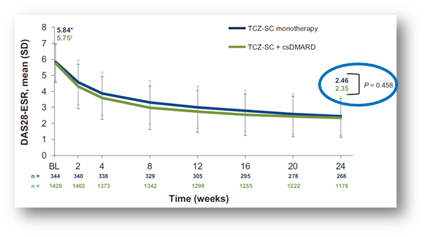
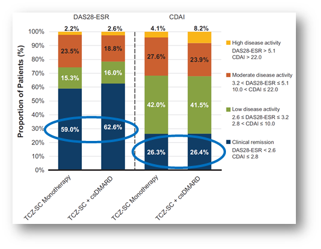

アクテムラ皮下注もMTX併用の有無で有効性が変わらない（TOZURA）
- ●22か国で行われたOpen label Phase４試験（TOZURA Study）
- ●中等度から重症のRA患者においてTCZ-SC単剤療法と、TCZ-SC+csDMARDs療法の有効性と安全性を検討（ACT-SC QW）
- ●対象患者:csDMARD-IR/TNF-IR/MTXナイーブ患者。n=1,804例: TCZ-SC群（N=353）、TCZ-SC+csDMARDs群（N=1451)
- ●24週後の両群間DAS28値に有意差無し（p=0.458）


ACT-SCのQW投与でも、MTX併用の有無で有効性が変わらないという結果が出た
E. Choy, et al. EULAR2017. #SAT0199.